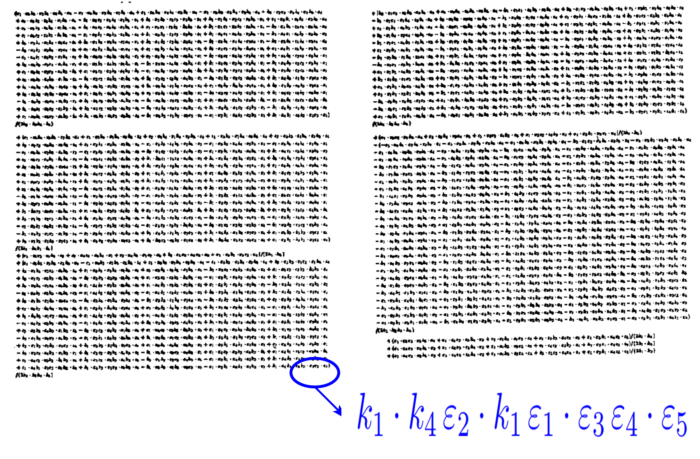
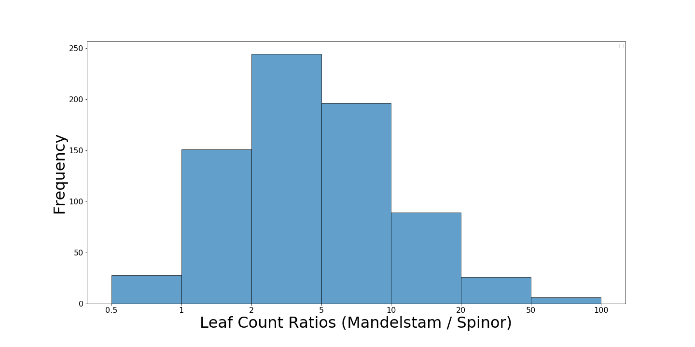
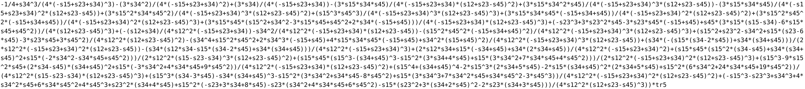
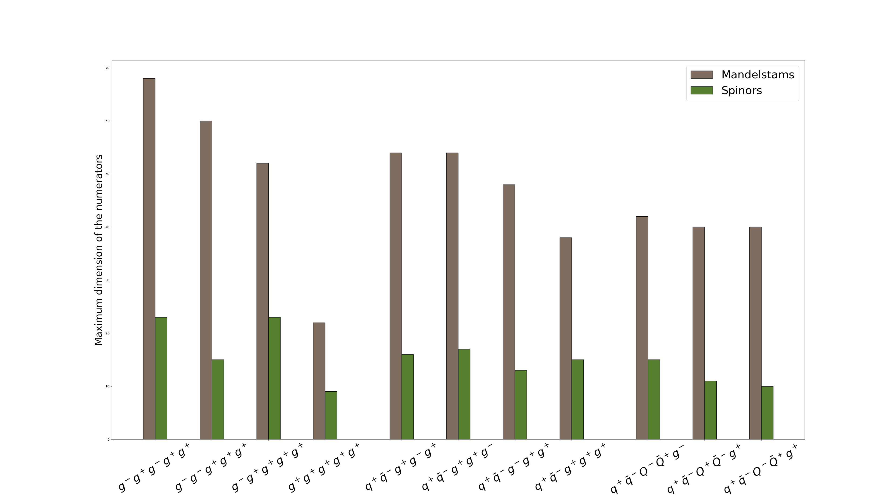
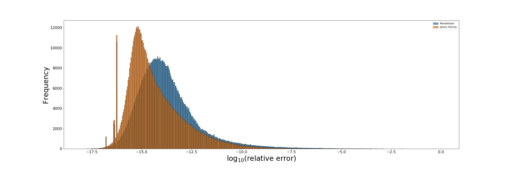
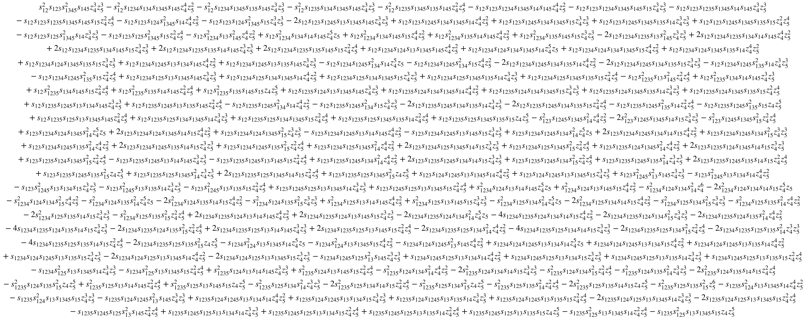

Analytical Amplitudes
from Numerical Exploration
arXiv:1904.04067 (JHEP) G. De Laurentis, D. Maître
arXiv:1910.11355 (JHEP) G. De Laurentis
arXiv:2002.04018 (JHEP) L. Budge, J. M. Campbell, G. De Laurentis, R. K. Ellis, S. Seth
Giuseppe De Laurentis
PhD supervisor: Daniel Maître
Summer Meeting - Freiburg


These slides at gdelaurentis.github.io/slides/summer-meeting-july2020
Table of Contents
A. Reconstruction of analytical spinor-helicity amplitudes
1. Motivation 2. Singular limits 3. Partial fractions 4. Ansatze fitting
B. Some applications
1. Six-gluon amplitude at one-loop 2. Two-loop five-parton finite remainders
3. Higgs + 4-parton (w/ finite top-mass) 4. Tree amplitudes from CHY formalism
A. Reconstruction of analytical
spinor-helicity amplitudes
A 1.1 Motivation
Cross sections at hadron colliders
$$σ_{2 \rightarrow n - 2} = ∑_{a,b} ∫ dx_a dx_b f_{a/h_1}(x_a, μ_F) \, f_{b/h_2}(x_b, μ_F) \;\hat{σ}_{ab→n-2}(μ_F, μ_R)$$
$$d\hat{σ}_{n}=\frac{1}{2\hat{s}}dΠ_{n-2}\;(2π)^4δ^4\big(∑_{i=1}^n p_i\big)\;|\overline{\mathcal{A}(p_i,μ_F, μ_R)}|^2$$
Better predictions require both more loops and higher multiplicity.
| |
|
||||
| 4 | 5 | 6 | 7 | ||
| |
0 | 2 | 3 | 4 | 5 |
| 1 | 4 | 5 | 6 | 7 | |
| 2 | 6 | 7 | 8 | 9 | |
IR singularities have to be cancelled between real and virtual corrections.
More loops $\rightarrow$ analytical complexity; more legs $\rightarrow$ algebraic complexity
Chromo-dynamics and kinematics
Color ordering at tree level and one loop
F.A.Berends, W.Giele, Z.Bern, D.A.Kosower, …
$\mathcal{A}^{tree}_{n}({p_i, λ_i, a_i}) = \; g^{n-2} ∑_{σ\in S_n/Z_n} \text{Tr}(T^{a_σ(1)}\dots T^{a_σ(n)}) A^{tree}_n(σ(1^{λ_1}),\dots ,σ(n^{λ_n}))$
$\mathcal{A}^{1-loop}_{n}({p_i, λ_i, a_i}) = \; g^{n} ∑_{σ\in S_n/Z_n} N_{c} \text{Tr}(T^{a_σ(1)}\dots T^{a_σ(n)}) A_{n;1}(σ(1^{λ_1}),\dots ,σ(n^{λ_n}))$ $ + ∑_{c = 2}^{\lfloor n/2 \rfloor + 1}∑_{σ\in S_n/Z_{n;c}} \text{Tr}(T^{a_σ(1)}\dots T^{a_σ(c-1)})\text{Tr}(T^{a_σ( c)}\dots T^{a_σ(n)}) A_{n;c}(σ(1^{λ_1}),\dots ,σ(n^{λ_n}))$
Decomposition in terms of basis integrals
G.’t Hooft, M.Veltman, Z.Bern, L.Dixon, D.A.Kosower, R.K.Ellis, G.Zanderighi, …
$$A^{1-loop}_{n;1} = \sum_i d_i I^i_{Box} + \sum_i c_i I^i_{Triangle} + \sum_i b_i I^i_{Bubble} + R$$
Intermediate and final expressions
Brute force calculations are a mess:

Results are often much easier
S.J.Parke, T.R.Taylor,
F.A.Berends, W.T.Giele
$A^{tree}(1^{+}_{g}2^{+}_{g}3^{+}_{g}4^{-}_{g}5^{-}_{g}) = \frac{i\,⟨45⟩^{4}}{⟨12⟩⟨23⟩⟨34⟩⟨45⟩⟨51⟩}$
Numerical and Analytical: pros and cons
Numerical calculations efficiently bypass algebraic complexity
Samurai [P.Mastrolia et al.], NGluon [S.Badger et al.], OpenLoops [F.Cascioli et al.], …
But analytical results can still be useful, they can provide:
|
$\cdot$ faster computation $\cdot$ better numerical stability $\cdot$ easier to distribute than a program |
$\cdot$ possible to compile on a GPU $\cdot$ explicit analytical structure $…$ |
How can we access compact analytical final expressions from numerical evaluations?
A 1.2 Spinor Helicity
Lowest-laying representations of the Lorentz group
(Recall: $\mathfrak{so}(1, 3)_\mathbb{C} \sim \mathfrak{su}(2) \times \mathfrak{su}(2)$)
| $\boldsymbol{(j_{-},j_{+})}$ | dim. | name | quantum field | kinematic variable |
|---|---|---|---|---|
| (0,0) | 1 | scalar | $h$ | m |
| (0,1⁄2) | 2 | right-handed Weyl spinor | $\chi_{R\,\alpha}$ | $\lambda_\alpha$ |
| (1⁄2,0) | 2 | left-handed Weyl spinor | $\chi_L^{\,\dot\alpha}$ | $\bar{\lambda}^{\dot\alpha}$ |
| (1⁄2,1⁄2) | 4 | rank-two spinor/four vector | $A^\mu/A^{\dot\alpha\alpha}$ | $P^\mu/P^{\dot\alpha\alpha}$ |
| (1⁄2,0)$\oplus$(0,1⁄2) | 4 | bispinor (Dirac spinor) | $\Psi$ | $u, v$ |
Spinor Covariants
Weyl spinors are sufficient for massless particles:
$\text{det}(P^{\dot\alpha\alpha})=m^2 \rightarrow 0 \quad \Longrightarrow \quad P^{\dot\alpha\alpha} = \bar\lambda^{\dot\alpha}\lambda^\alpha$.
In terms of 4-momentum components we have:
$$ \lambda_\alpha=\frac{1}{\sqrt{p^0+p^3}}\begin{pmatrix}p^0+p^3 \\ p^1+ip^2\end{pmatrix} \, , \;\;\; \lambda^\alpha=\epsilon^{\alpha\beta} \lambda_\beta =\frac{1}{\sqrt{p^0+p^3}}\begin{pmatrix}p^1+ip^2 \\ -p^0+p^3\end{pmatrix} $$
$\bar\lambda_{\dot\alpha}=\frac{1}{\sqrt{p^0+p^3}}\begin{pmatrix}p^0+p^3 \\ p^1-ip^2\end{pmatrix} \, , \;\;\; \bar\lambda^{\dot\alpha}=\epsilon^{\dot\alpha\dot\beta}\bar\lambda_{\dot\beta}=\frac{1}{\sqrt{p^0+p^3}}\begin{pmatrix}p^1-ip^2 \\ -p^0+p^3\end{pmatrix}$
$$ \bar\lambda_{\dot\alpha} = (\lambda_\alpha)^* \quad if \quad p^i \in \mathbb{R}; \quad \quad \bar\lambda_{\dot\alpha} \neq (\lambda_\alpha)^* \quad if \quad p^i \in \mathbb{C} $$
Spinor Helicity Invariants
$$ ⟨ij⟩ = λ_iλ_j = (λ_i)^α(λ_j)_α \quad \quad \quad [ij] = \barλ_i\barλ_j = (\barλ_i)_\dotα(\barλ_j)^\dotα $$
$$ s_{ij} = ⟨ij⟩[ji] $$
$$ ⟨i\;|\;(j+k)\;|\;l] = (λ_i)^α (\not P_j + \not P_k )_{α\dotα} \barλ_l^\dotα $$
$$ ⟨i\;|\;(j+k)\;|\;(l+m)\;|\;n⟩ = (λ_i)^α (\not P_j + \not P_k )_{α \dot α} (\bar{\not P_l} + \bar{\not P_m} )^{\dot α α} (λ_n)_α $$
$$ tr_5(ijkl) = tr(\gamma^5 \not P_i \not P_j \not P_k \not P_l) = [i\,|\,j\,|\,k\,|\,l\,|\,i⟩ - ⟨i\,|\,j\,|\,k\,|\,l\,|\,i] $$
Why use complex momenta?
We want to be able to distinguish between different poles.
For example, we want to tell apart:
$$ \frac{1}{⟨ij⟩} \quad and \quad \frac{1}{[ji]} $$
but with real momenta we would have:
$$ ⟨ij⟩ \sim [ji]^* \sim \sqrt{s_{ij}} $$
A 2.1 Singular limits
Singular limits $\Rightarrow$ poles of the amplitude
Let $\{r\}$ be a set of Lorentz invariants
$r_i \in \{ ⟨12⟩, ⟨13⟩, \dots, ⟨1|2+3|4], \dots, s_{123}, \dots \}$,
and let $\, \mathbb{f} \,$ be the function we want to reconstruct.
$r_i \rightarrow ε \ll 1, \quad r_{j \neq i} \sim \mathcal{O}(1), \quad \mathbb{f} \rightarrow ε^α \; \Rightarrow \; log(\mathbb{f}) \rightarrow α\cdot log(ε)$
and it can be guaranteed only with complex momenta.
Tree-level example
$\mathbb{f} = A^{tree}(1^{+}_{g}2^{+}_{g}3^{+}_{g}4^{-}_{g}5^{-}_{g}6^{-}_{g})$
| |
|
 |
 |
Note: the invariant on the x-axis gets smaller from left to right.
The least common denominator
Studying all the limits yields the least common denominator for $\mathbb{f}$:
$\mathbb{f} = \frac{\mathcal{N_{LCD}}}{\mathcal{D_{LCD}}} = \frac{\mathcal{N_{LCD}}}{⟨12⟩⟨16⟩[16]⟨23⟩⟨34⟩[34][45][56]s_{234}s_{345}}$.
The complexity of the numerator depends on two parameters:
- mass dimension; $\quad \quad \quad$ 2. little group scalings.
The ansatz has 1326 independent terms.
How big is the ansatz?
Easiest to count at constant null phase weights;
the size of the ansatz is a function of:
1. its mass dimension ($d$) $\quad\quad$ 2. multiplicity of phase space ($m$).
If we allow only for a polynomial in the numerator, then:
$|s_{ij}| = \frac{m(m-3)}{2}$ $\quad\quad$ $|tr_5| = {m-1 \choose 4}$
$\left(\mkern -9mu \begin{pmatrix}\, |s_{ij}| \, \\ \, d/2 \, \end{pmatrix} \mkern -9mu \right) \leq$ ansatz size $\leq \left(\mkern -9mu \begin{pmatrix} \, |s_{ij}| \, \\ \, d/2 \, \end{pmatrix} \mkern -9mu \right) + |tr_5| \left(\mkern -9mu \begin{pmatrix} \, |s_{ij}| \, \\ \, (d-4)/2 \, \end{pmatrix} \mkern -9mu \right)$
The upper bound is saturated for $(\forall m \wedge d \leq 4)$ and for $(\forall d \wedge m \leq 5)$.
Otherwise it is an overcounting due to Schouten identity for 4-momenta:
$tr_5(2345)1_\mu - tr_5(1345)2_\mu + tr_5(1245)3_\mu - tr_5(1235)4_\mu + tr_5(1234)5_\mu = 0$
A 2.2 Doubly singular limits
Partial fractioning
Except for the easiest cases, we should really think about $\mathbb{f}$ as:
$\mathbb{f} = \sum_i \frac{\mathcal{N}_i}{\mathcal{D}_i} = \sum_i \frac{\mathcal{N}_i}{\mathcal{R}_i\mathcal{S}_i}$,
where $\mathcal{R}_i$ are products of subsets of $\mathcal{D_{LCD}}$ (i.e. real poles),
and $\mathcal{S}_i$ are products of factors not in $\mathcal{D_{LCD}}$ (i.e. spurious poles).
Doubly singular limits
The required information can be accessed from doubly singular limits.
We now want phase space points where two invariants vanish:
$r_i \rightarrow ε \ll 1, \quad r_j \rightarrow ε \ll 1, \quad \mathbb{f} \rightarrow ε^α \; \Rightarrow \; log(\mathbb{f}) \rightarrow α\cdot log(ε)$
In general we cannot guarantee uniqueness anymore,
even with complex momenta.
$\exists \;r_{k \neq i, j} \sim \epsilon$.
Information from doubly singular limits
| ⟨1|2⟩ | ⟨1|6⟩ | [1|6] | ⟨2|3⟩ | ⟨3|4⟩ | [3|4] | [4|5] | [5|6] | s_234 | s_345 | |
|---|---|---|---|---|---|---|---|---|---|---|
| ⟨1|2⟩ | 1 | 1, 30 | 1, 3 | 1, 31 | 1, 2 | 2, 12 | 2, 3 | 2, 10 | 1, 2 | 2, 10 |
| ⟨1|6⟩ | 1, 30 | 1 | 1, 2 | 1, 2 | 1, 10 | 2, 4 | 2, 12 | 1, 3 | 2, 10 | 2, 10 |
| |
||||||||||
| s_234 | 1, 2 | 2, 10 | 2, 10 | 2, 10 | 2, 10 | 2, 10 | 1, 2 | 2, 10 | 1 | 1, 2 |
| s_345 | 2, 10 | 2, 10 | 2, 10 | 1, 2 | 2, 10 | 2, 10 | 2, 10 | 1, 2 | 1, 2 | 1 |
The first number is the slope of the log-log plot in the limit,
the second number is the degeneracy of the phase space in the limit.
Let’s introduce the following notation, which we’ll need later: $\{a, b\}_\epsilon$.
It represents the set of all invariants that vanish when $a$ and $b$ vanish.
For example:
$\{⟨12⟩,\,⟨16⟩\}_\epsilon = \{ ⟨12⟩, ⟨16⟩, ⟨26⟩, s_{345}, ⟨2|1+6|5], \dots \text{25 more} \dots \}$
Which poles share the same denominator?
The following is single line of the table in the previous slide:
| ⟨1|2⟩ | ⟨1|6⟩ | [1|6] | ⟨2|3⟩ | ⟨3|4⟩ | [3|4] | [4|5] | [5|6] | s_234 | s_345 | |
|---|---|---|---|---|---|---|---|---|---|---|
| s_234 | 1 , 2 | 2 , 10 | 2 , 10 | 2 , 10 | 2 , 10 | 2 , 10 | 1 , 2 | 2 , 10 | 1 | 1 , 2 |

Diagramatic representation of relation between poles
A 3.1 Partial fraction decompositions
Partial fraction decomposition #1
| |
|
(Spoiler: $ \quad \small \mathcal{N_1} = 1i⟨4|2+3|1]^3, \quad \mathcal{N_2} = -1i⟨6|1+2|3]^3$)
Where does $⟨2|1+6|5]$ come from?
$\{⟨12⟩, [56]\}_{\epsilon} \, \cap \, \{⟨16⟩, s_{234}\}_{\epsilon} \, \cap \, \{⟨23⟩, [45]\}_{\epsilon} \, \cap \, \{[34], s_{234}\}_{\epsilon} \, \dots$
Partial fraction decomposition #2
 |
|
(Spoiler: $ \quad \small \mathcal{N_1} = 1i[23]^3⟨56⟩^3, \quad \mathcal{N_2} = -1i[12]^3⟨45⟩^3, \quad \mathcal{N_3} = 1is_{123}^3 $)
$⟨1|2+3|4] = \{⟨12⟩, [34]\}_{\epsilon} \, \cap \, \{⟨23⟩, s_{234}\}_{\epsilon} \, \cap \, \{⟨16⟩, [45]\}_{\epsilon} \, \cap \, \dots$ $⟨3|1+2|6] = \{⟨23⟩, [16]\}_{\epsilon} \, \cap \, \{⟨12⟩, s_{345}\}_{\epsilon} \, \cap \, \{⟨34⟩, [56]\}_{\epsilon} \, \cap \, \dots$
Both of these partial fractions correspond to some BCFW shift,
but we are not limited to these representations.
Partial fraction decomposition #3
New? More similar to A.Berends, W.Giele than BCFW
| |
|
We now have no spurious poles, but $s_{234}$ and $s_{345}$ appear in the same denominator, although the doubly singular limit suggests they shouldn’t.
This means that in the limit of $\{s_{234}, s_{345}\} \rightarrow \epsilon$ the individual terms will behave like $\epsilon^{-2}$ but the sum as $\epsilon^{-1}$.
Different representations can be exploited to ensure numerical stability.
A 3.2 Fitting of ansatz
Spinor ansatz
Let’s consider the first representation:
$\mathbb{f}=$ $\frac{\mathcal{N_1}}{[16]⟨23⟩⟨34⟩[56]⟨2|1+6|5]s_{234}}+$ $\frac{\mathcal{N_2}}{⟨12⟩⟨16⟩[34][45]⟨2|1+6|5]s_{345}}$
$\mathcal{N_1}$ has mass dimension: 6, and phase weights: [-3, 0, 0, 3, 0, 0].
The ansatz has size 10:
$[⟨24⟩⟨24⟩⟨24⟩[12][12][12],$ $⟨24⟩⟨24⟩⟨34⟩[12][12][13],$ $⟨24⟩⟨24⟩⟨45⟩[12][12][15],$ $⟨24⟩⟨34⟩⟨34⟩[12][13][13],$ $⟨24⟩⟨34⟩⟨45⟩[12][13][15],$ $⟨24⟩⟨45⟩⟨45⟩[12][15][15],$ $⟨34⟩⟨34⟩⟨34⟩[13][13][13],$ $⟨34⟩⟨34⟩⟨45⟩[13][13][15],$ $⟨34⟩⟨45⟩⟨45⟩[13][15][15],$ $⟨45⟩⟨45⟩⟨45⟩[15][15][15]]$,
much smaller than the one for $\mathcal{N_{LCD}}$
which had more than 1000 terms!
Gaussian elimination
$\mathbb{f}=$ $\frac{\mathcal{N_1}}{[16]⟨23⟩⟨34⟩[56]⟨2|1+6|5]s_{234}}+$ $\frac{\mathcal{N_2}}{⟨12⟩⟨16⟩[34][45]⟨2|1+6|5]s_{345}}$
Isolate the first term by generating phase space points
in the limit of, say, $s_{234} \rightarrow \epsilon$.
Then we can reconstruct the numerical coefficient of the ansatz entries by Gaussian elimination.
$$ M_{ij}c_j = \mathbb{f}(P_i) \quad \text{i.e.} \quad \begin{pmatrix} \leftarrow ansatz(P_1) \rightarrow \\ \leftarrow ansatz(P_2) \rightarrow \\ \dots \end{pmatrix} \cdot \begin{pmatrix} c_1 \\ c_2 \\ \dots \end{pmatrix} = \begin{pmatrix} \mathbb{f}(P_1) \\ \mathbb{f}(P_2) \\ \dots \end{pmatrix} $$
We get:
$⟨24⟩⟨24⟩⟨24⟩[12][12][12]: 1i$, $⟨24⟩⟨24⟩⟨34⟩[12][12][13]: 3i$,
$⟨24⟩⟨34⟩⟨34⟩[12][13][13]: 3i$, $⟨34⟩⟨34⟩⟨34⟩[13][13][13]: 1i$
B. Applications
1. Six-Gluon One-Loop Amplitude
Brief litterature review
First complete numerical calculation
R.K.Ellis, W.T.Giele, G.Zanderighi
Pheno applications to 4-jet production
Z.Bern, G.Diana, L.J.Dixon, F.FebresCordero, S.Hoeche, D.A.Kosower, H.Ita, D.Maitre, K.Ozeren
S.Badger, B.Biedermann, P.Uwer, V.Yundin
NMHV analytical cut constructible part
R.Britto, B.Feng, P.Mastrolia
NMHV analytical rational part
Z.Xiao, G.Yang, C.Zhu
More litterature info
David C. Dunbar
Our results
First complete analytical results presented with a single notation.
All expressions are manifestely gauge invariant and rational (no square roots).
Best speed up is a factor of ~75 in the split NMHV configuration
(compared to numerical computations in BlackHat).
Worst one is a factor of ~2 in the alternated NMHV configuration.
Bottleneck: numerators of subleading poles.
Three mass triangle
$\mathcal{D_{LCD}} = ⟨12⟩[12]⟨34⟩[34]⟨56⟩[56]⟨1|3+4|2]^4⟨3|1+2|4]^4⟨5|1+2|6]^4Δ_{135}^3$
We obtain an explicitly rational expression, like for $\mathcal{N}=1$ SUSY by
N.E.J.Bjerrum-Bohr, D.C.Dunbar, W.B.Perkins.
Pole structure: are there radicals?
 |
$123456$ $\overline{216543}$ $345612$ $\overline{432165}$ $561234$ $\overline{654321}$ |
| ⟨12⟩ | [12] | ⟨34⟩ | [34] | ⟨56⟩ | [56] | ⟨1|3+4|2] | ⟨3|1+2|4] | ⟨5|1+2|6] | Δ_135 | |
|---|---|---|---|---|---|---|---|---|---|---|
| ⟨1|2⟩ | 1 | 1, 2 | 1, 2 | 2, 12 | 1, 2 | 2, 12 | 4, 4 | 5, 6 | 2, 10 | 2, 4 |
| |
||||||||||
| ⟨3|1+2|4] | 5, 6 | 2, 10 | 4, 4 | 4, 4 | 2, 10 | 5, 6 | 4, 2 | 4 | 4, 2 | 3.5, 4 |
| |
||||||||||
How to avoid square roots
All branch cuts should have been taken care of by unitarity cuts.
We should be able to explain this without using square roots.
The culprit is $\Delta$, which first appears in the
three mass triangle momentum parametrisation:
$\Delta_{135} = (K_1 \cdot K_2)^2 - K_1^2 K_2^2$
Solution:
In some limits $\Delta$ behaves like the square of some quantity
$(\Omega_{351})^2 \equiv (2s_{12}s_{56}-(s_{12}+s_{56}-s_{45})s_{123})^2 = 4s_{123}^2\Delta_{135}-4s_{12}s_{56}\langle 4|1+2|3]\langle 3|1+2|4]$
$(\Pi_{351})^2 \equiv (s_{123}-s_{124})^2 = 4\Delta_{135}-4\langle 4|1+2|3]\langle 3|1+2|4]$
The three-mass triangle rational coefficient
$$
\begin{gathered}
\scriptscriptstyle \frac{-1/2i⟨23⟩^3[45]^3s_{123}^2Ω_{351}}{⟨12⟩[56]⟨1|2+3|4]⟨3|1+2|4]^4⟨3|1+2|6]}+\\
\scriptscriptstyle \frac{1/4i[12]⟨23⟩^3[45]^3⟨56⟩⟨4|1+2|3]s_{123}Π_{351}}{⟨1|2+3|4]⟨3|1+2|4]^3⟨3|1+2|6]Δ_{135}}+\\
\scriptscriptstyle \frac{2i⟨23⟩^2[45]^2⟨2|1+3|5]s_{123}Ω_{351}}{⟨12⟩[56]⟨1|2+3|4]⟨3|1+2|4]^3⟨3|1+2|6]}+\\
\dots\\
\scriptscriptstyle (123456\; \rightarrow \; 345612)+\\
\scriptscriptstyle (123456\; \rightarrow \; 561234)+\\
\dots
\end{gathered}
$$
(Showing ⟨1|3+4|2], ⟨3|1+2|4] and ⟨5|1+2|6] quadruple and triple poles)
A six-gluon one-loop rational part
$R^{1-loop}_6(1^{+}_{g}2^{-}_{g}3^{+}_{g}4^{-}_{g}5^{+}_{g}6^{-}_{g})$
$\mathcal{D_{LCD}} =$ $⟨12⟩[12]⟨13⟩^2⟨15⟩^2⟨16⟩[16]⟨23⟩[23][24]^2[26]^2⟨34⟩[34]⟨35⟩^2⟨45⟩[45][46]^2⟨56⟩[56]$ $⟨1|2+3|1]^2⟨1|5+6|1]^2⟨1|3+4|2]^2⟨1|2+3|6]^2⟨2|1+6|2]^2⟨2|3+4|2]^2$ $⟨3|1+6|2]^2⟨3|1+2|3]^2⟨3|4+5|3]^2⟨3|1+2|4]^2⟨4|2+3|4]^2⟨4|5+6|4]^2$ $⟨5|1+6|4]^2⟨5|1+6|5]^2⟨5|3+4|5]^2⟨5|1+2|6]^2⟨6|1+2|6]^2⟨6|4+5|6]^2$ $s_{123}s_{234}s_{345}Δ_{135}^2Δ_{624}^2$
The mass dimension is now 116,
which would imply an ansatz with size roughly $10^{10}$.
The pole structure
is a bit of a mess:
The rational part
$$
\begin{gathered}
\scriptscriptstyle\frac{2/3i⟨12⟩^3[15]^3[23]s_{123}}{[45]⟨1|2+3|1]^2⟨1|2+3|4]⟨1|2+3|6]⟨3|1+2|6]}+\\
\scriptscriptstyle\frac{-2/3i⟨12⟩^3[15]^3[23]⟨3|1+2|5]}{⟨13⟩[45][56]⟨1|2+3|1]^2⟨1|2+3|4]⟨3|1+2|6]}+\\
\scriptscriptstyle\frac{1i⟨12⟩^3[15]^2⟨23⟩[23]^2[56]}{[45]⟨1|2+3|1]⟨1|2+3|4]⟨1|2+3|6]^2⟨3|1+2|6]}+\\
\scriptscriptstyle(123456\; \rightarrow \; \overline{234561})+
\scriptscriptstyle(123456\; \rightarrow \; 345612)+
\scriptscriptstyle(123456\; \rightarrow \; \overline{456123})+
\scriptscriptstyle(123456\; \rightarrow \; 561234)+
\scriptscriptstyle(123456\; \rightarrow \; \overline{612345})+\\
\scriptscriptstyle(123456\; \rightarrow \; \overline{654321})+
\scriptscriptstyle(123456\; \rightarrow \; 543216)+
\scriptscriptstyle(123456\; \rightarrow \; \overline{432165})+
\scriptscriptstyle(123456\; \rightarrow \; 321654)+
\scriptscriptstyle(123456\; \rightarrow \; \overline{216543})+
\scriptscriptstyle(123456\; \rightarrow \; 165432)+\\
\dots
\end{gathered}
$$
(Showing ⟨1|2+3|1], ⟨1|2+3|6] and symmetric poles)
2. Five-Parton Two-Loop
Finite Remainders
Preview of refitted results into spinor helicity of
[S. Abreu, J. Dormans, F. Febres Cordero, H. Ita, B. Page, V. Sotnikov]
Expression complexity
Using the Mandelstam expressions as numerical input,
we reconstruct them in spinor helicity.

Showing ratio of leaf counts for Mandelstam and spinor-helicity expressions (x-axis) vs. frequency (y-axis). The complexity is significantly reduced (total leaf count: 4176128 down from 9162373). .
Example: uubggg pmpmp Nf1 #3

and
$ -\frac{[32]^3 [41]^3}{2 [31]^3 [42]^3} $
are equivalent.
Example: ggggg mpmpp Nf1 # 9

and
$-1\frac{[12]³[15][23]⟨25⟩³[35]³}{[13]⁴[25]⟨5|1+2|5]³}+\frac{97}{12}\frac{[12]⁴⟨25⟩[35]⁴}{[13]⁴[25]³⟨5|1+2|5]}$
$+\frac{13}{3}\frac{[12]⁴⟨15⟩[15][35]⁴}{[13]⁴[25]⁴⟨5|1+2|5]}+\frac{1}{4}\frac{[12]⁴⟨15⟩[15]⟨25⟩[35]⁴}{[13]⁴[25]³⟨5|1+2|5]²}$
$-\frac{3}{2}\frac{[12]²⟨25⟩²[25][35]²}{[13]²[25]⟨5|1+2|5]²}+\frac{7}{4}\frac{[12]³⟨25⟩²[35]³}{[13]³[25]⟨5|1+2|5]²}$
$-\frac{43}{3}\frac{[12]³⟨25⟩[35]³}{[13]³[25]²⟨5|1+2|5]}$
$-\frac{25}{3}\frac{[12]³⟨15⟩[15][35]³}{[13]³[25]³⟨5|1+2|5]}$
$-\frac{3}{2}\frac{[12]⟨25⟩[25][35]}{[13][25]⟨5|1+2|5]}$
$+4\frac{[12]²⟨25⟩[35]²}{[13]²[25]⟨5|1+2|5]}$
$-\frac{15}{2}\frac{[12]²[35]²}{[13]²[25]²}$
$+\frac{7}{2}\frac{[12][35]}{[13][25]}$
$-\frac{2}{3}$
are equivalent.
Biggest linear systems to solve
Recall that size of the linear system is directly related
to the mass dimension of the numerators by this formula

By performing the partial fraction decomposition before fitting the numerators the size of the biggest systems to solve is significantly reduced.
Numerical stability


Errors made by double-precision evaluations over $1k$ $collider$ phase space points.
3. Higgs + 4-Parton Amplitude
(@ finite top-mass)
Example of cut diagram

Only singularity involving $m_{top}$ (from pentagon contributions)
$16 |S_{1×2×3×4}| = −s_{12} \, s_{23} \, s_{34} \, \langle 1 |2 + 3|4] \, \langle 4|2 + 3|1] + m^2_{top} \, tr_5(1234)^2$
We can generate point near this singularity in a similar fashion.
Structure of the coefficients
The massive external leg (the Higgs) is easily accomodated by considering it as a pair of massless particles (think decay products).
In the end all dependance on $P_{Higgs}$ is removed by using momentum conservation.
The coefficients are Taylor expasions in $m_{top}$:
$C^{(0)} + m^2_{top} C^{(2)}$.
with $C^{(0)}$ and $C^{(2)}$ resabling the six-gluon coefficients.
4. Tree Amplitudes from CHY formalism
Brief overview
Massless $n-$point tree amplitudes are given by
$\textit{A}_n \, = \, z_1^4 \cdot i \sum_{j = 1}^{(n-3)!} \frac{I_{\scriptscriptstyle CHY}(z^{(j)}(k); k; ϵ)}{\det(ϕ_{rst}^{ijk})(z^{(j)}(k); k)}$
The $z’s$ are related to the momenta through the scattering equations.
The only process dependant part is $I_{CHY}$, the rest depends only on multiplicity.
For instance:
$I_{CHY, Einstein Gravity} = PF’(\Psi) \; PF’(\tilde\Psi)$
$I_{CHY, Yang Mills} = C_n \; PF’(\Psi) \quad \quad I_{CHY, Biadjoint Scalar} = C_n \; C_n$
(See backup slides for specific definitions of functions)
Numerical amplitudes
Developed two python packages:
>>> pip install seampy
>>> pip install lipsseampy from Scatterin Equations and AMplitudes with PYthon
lips from Lorentz Invarinat Phase Space
Arbitrary-precision floating-point amplitudes with a couple of lines of code
>>> from seampy import theories, NumericalAmplitude
>>> from lips import Particles
>>> theories
[YM, EG, BS, BI, NLSM, Galileon, CG, DF2]
>>> oDF2Amp = NumericalAmplitude(theory="DF2", helconf="+++++")
>>> oParticles = Particles(5)
>>> oDF2Amp(oParticles)
mpc(real='#nbr', imag='#nbr')Analytical reconstruction
First complete analytical expressions for $(DF)^2$ theory at five point and more.
For example:
$$
\begin{gathered}
A_{(\text{DF})^2}(1^+,\,2^+,\,3^+,\,4^+,\,5^+) =\\
\frac{i[12]⟨13⟩⟨25⟩[35]^2}{⟨12⟩^2⟨34⟩⟨45⟩}+\frac{i[14][24][35]}{⟨12⟩⟨35⟩}+\\
(12345 → 23451)\,+\,(12345 → 34512)\,+\\
(12345 → 45123)\,+\,(12345 → 51234)\,+\\
\frac{2i[15][23]⟨4|1+2|4]}{⟨12⟩⟨34⟩⟨45⟩}+\\
\frac{2i[12][45]⟨3|1+5|3]}{⟨15⟩⟨23⟩⟨34⟩}+\\
\frac{2i[12][15][34]}{⟨23⟩⟨45⟩}\phantom{+}
\end{gathered}
$$
$(DF)^2$ double copies into conformal gravity.
(CG is the zero-mass limit of a mass deformed theory which reproduces EG at infinite mass)
Summary
Spinor-helicity rational coefficients can be reconstructed using:
$\circ$ singular limits for to the least common denominator;
$\circ$ doubly singular limits for partial fraction decompositions;
$\circ$ generic ansatze in singular limits for numerators;
Applications involve tree-level, one-loop and two-loop expressions alike.
It is possible to accomodate masses (both internal/external).
Thank you for your attention!
Backup Slides
The CHY Formalism
B 1.1 Motivation
Hidden relations …
Relations between amplitudes in different theories are often hidden in a standard Lagrangian quantum field theory formulation.
$\mathcal{L_{Einstein Gravity}} = R\sqrt{-g} \quad \quad \mathcal{L_{Yang Mills}} = -\frac{1}{4}F^{a\mu\nu}F^{a}_{\mu\nu}$
$\mathcal{L_{Biadjoint Scalar}} = 2∂^µΦ^{aa′}∂_µΦ^{aa′}+\frac{y}{3}f^{abc}\tilde f^{a′b′c′}Φ^{aa′}Φ^{bb′}Φ^{cc′}$
E.g. the above are related by the KLT relations [20],
more generally known as double copy relations.
.. are made explicit
By comparison in the CHY formalism [21, 22, 23] these relations are made explicit in the structure of the CHY-Integrands:
$I_{CHY, Einstein Gravity} = PF’(\Psi) \; PF’(\tilde\Psi)$
$I_{CHY, Yang Mills} = C_n \; PF’(\Psi) \quad \quad I_{CHY, Biadjoint Scalar} = C_n \; C_n$
Loosely speaking we have [24]:
$A = \int I_{CHY} \quad$ and $\quad A_{EG} = A_{YM} \tilde A_{YM} / A_{BS}$
Independent formulation
$\circ$ it does not rely on the Lagrangian or Feynman diagrams;
$\circ$ it is more efficient than a brute-force computation;
$\circ$ it is less efficient than recursion relations;
$\circ$ but the latter in some cases are not available.
B 1.2 General Introduction
Scattering equations and Riemann sphere
The backbone of the CHY formalism are the scattering equations:
$f_a (z, k) \equiv \sum\limits_{b \in A \backslash \{a\}} \frac{k_a \cdot k_b}{z_a - z_b} = 0, \qquad \forall a \in A = \{1, \dots, n\}$
The $k$’s are the momenta, and the $z$’s live on the Riemann sphere.

Möbius invariance or redundancy
The scattering equations $f_a$ are invariant under Möbius transformations:
$z \rightarrow \zeta = \frac{\alpha z + \beta}{\gamma z + \delta}$.
A Möbius transformation is obtained by performing the following operations on the Riemann sphere:
| 1) Translation $z \rightarrow \zeta = z + A$ | 2) Inversion $z \rightarrow \zeta = 1/z$ |
| 3) Rescaling $z \rightarrow \zeta = Bz$ | 4) Translation $z \rightarrow \zeta = z + C$ |
In general this allows us to fix three of the $z$’s:
$z_1 = \infty, \quad z_2 = 1, \quad z_n = 0 \;$
Amplitudes from integrals
The scattering amplitudes $\textit{A}_n$ are given by:
$\textit{A}_n \, = \, i \int \frac{d^nz}{d\omega} \;\; I_{\scriptscriptstyle CHY}(z; k; \epsilon) \prod’_{a \in A} \delta(f_a(z, k))$
$\; = \, i \oint_\textit{O} \frac{d^nz}{d\omega} \;\; I_{\scriptscriptstyle CHY}(z; k; \epsilon) \prod’_{a \in A}\frac{1}{f_a(z,k)}$
With the following definitions:
$d\omega = \frac{dz_rdz_sdz_t}{(z_r-z_s)(z_s-z_t)(z_t-z_s)}$
$\prod’_{a \in A} = (z_i-z_j)(z_j-z_k)(z_k-z_i)\prod_{a \in A \backslash \{i,j,k\}}$
which make $\textit{A}_n$ independent of the choice of $\{i, j, k\}$ and $\{r, s, t\}$.
Amplitudes from sums
In practice we want an algebraic equation of the amplitudes.
Change variables $z_a \rightarrow f_a$, $\,$ pick up a Jacobian:
$$ϕ_{ab}\, = \frac{∂ f_a}{∂ z_b}=
\begin{cases}
\frac{2 k_a \cdot k_b}{(z_a - z_b)^2} & a \neq b \; ,\\
- \sum\limits_{j \in A \backslash {a}} \frac{2 k_a \cdot k_j}{(z_a - z_j)^2} & a = b \; .
\end{cases}$$
Integrate over the delta functions, set $\{z_1, z_2, z_3\} = \{\infty, 1, 0\}$ get:
$\textit{A}_n \, = \, z_1^4 \cdot i \sum_{j = 1}^{(n-3)!} \frac{I_{\scriptscriptstyle CHY}(z^{(j)}(k); k; ϵ)}{\det(ϕ_{rst}^{ijk})(z^{(j)}(k); k)}$
B 2. The scattering equations
The original scattering equations
This part of the computation depends only on the scattering multiplicity!
No information about the thoery is required.
Solving the scattering equations (SE) is not trivial.
$f_a (z, k) \equiv \sum\limits_{b \in A \backslash \{a\}} \frac{k_a \cdot k_b}{z_a - z_b} = 0, \qquad \forall a \in A = \{1, \dots, n\}$
If we simply take the common denominator we obtain a polynomial of much higher degree than necessary.
The polynomial scattering equations
Instead we are going to consider the polynomial SE $h_{m}$ from [25]
$h_{m} = \sum_{S \subset A’,\, |S| = m} k^2_{S_1}z_S=0 \, , \quad \text{with} \quad 1 \leq m \leq n - 3 \, ,$
$A’ = A \backslash \{1,n\} \, , \quad S_1 = S \cup {1}$
$k_S = \sum_{b \in S} k_b \quad \text{and} \quad z_S = \prod_{b \in S} z_b$
For example, for $n = 5$:
$h_1 = z_2 k_{\{1,2\}}^2+z_3 k_{\{1,3\}}^2+z_4 k_{\{1,4\}}^2$
$h_2 = z_2 z_3 k_{\{1,2,3\}}^2+z_2 z_4 k_{\{1,2,4\}}^2+z_3 z_4 k_{\{1,3,4\}}^2$
Elimination theory
Needed for solving systems of polynomial equations.
Just like Gaussian elimination is used for the linear case.
We can rewrite the two polynomial SE for $n = 5$ as:
$$
\left(
\begin{array}{cc}
H & H^{z_2} \\
\end{array}
\right)|_{z_2=0} \cdot
\left(
\begin{array}{c}
1\\
{z_2}\\
\end{array}
\right)=
\left(
\begin{array}{cc}
z_3 s_{13}+ z_4 s_{14} & s_{12} \\
z_3 z_4 s_{134} & z_3 s_{123} + z_4 s_{124} \\
\end{array}
\right) \cdot
\left(
\begin{array}{c}
1\\
{z_2}\\
\end{array}
\right)=0$$
Using the following simplified notation:
$$
H = \left(
\begin{array}{c}
h_1 \\
h_2 \\
\end{array}
\right) \; , \quad
H^{\sigma _2} = \partial_{z_2}
\left(
\begin{array}{c}
h_1 \\
h_2 \\
\end{array}
\right) \; , \quad
k_{\{i,j,\dots\}}^2 = s_{ij\dots}
$$
Five-point solutions
Now taking the determinant of the matrix form of the SE we get:
$$
\det \left(
\begin{array}{cc}
H & H^{z_2} \\
\end{array}
\right)|_{z_2=0} = 0
$$
$$ z_3^2 s_{13} s_{123} + z_4 z_3 ( s_{14} s_{123} + s_{13} s_{124} - s_{12} s_{134} ) + z_4^2 s_{14} s_{124} = 0 \; , $$
This is the required quadratic in $ z_4 / z_3 $ .
By reintroducing $z_2$ and setting it to 1 we can then solve for $z_4$ and $z_3$:
$$ z_3 = \frac{-s_{12} s_{134} + s_{123} s_{14} - s_{124} s_{13} \pm \sqrt{s_{12}^2 s_{134}^2 - 2 s_{12} s_{123} s_{134} s_{14} - 2 s_{12} s_{124} s_{13} s_{134} + s_{123}^2 s_{14}^2 - 2 s_{123} s_{124} s_{13} s_{14} + s_{124}^2 s_{13}^2}}{2 s_{13} s_{134}} $$ $$ z_4 = \frac{-s_{12} s_{134} - s_{123} s_{14} + s_{124} s_{13} \mp \sqrt{s_{12}^2 s_{134}^2 - 2 s_{12} s_{123} s_{134} s_{14} - 2 s_{12} s_{124} s_{13} s_{134} + s_{123}^2 s_{14}^2 - 2 s_{123} s_{124} s_{13} s_{14} + s_{124}^2 s_{13}^2}}{2 s_{14} s_{134}} $$
What happens at six point?
Now we have three polynomial scattering equations:
$$
\mkern-30mu H = \left(
\begin{array}{c}
h_1 \\
h_2 \\
h_3 \\
\end{array}
\right) =
\left[\begin{matrix}s_{12} z_{2} + s_{13} z_{3} + s_{14} z_{4} + s_{15} z_{5} \\ s_{123} z_{2} z_{3} + s_{124} z_{2} z_{4} + s_{125} z_{2} z_{5} + s_{134} z_{3} z_{4} + s_{135} z_{3} z_{5} + s_{145} z_{4} z_{5} \\ s_{1234} z_{2} z_{3} z_{4} + s_{1235} z_{2} z_{3} z_{5} + s_{1245} z_{2} z_{4} z_{5} + s_{1345} z_{3} z_{4} z_{5}\end{matrix}\right]
$$
We want to eliminate 4 variables: $$ \{1, z_2\} \otimes \{1, z_3\} = \{1, z_2, z_3, z_2 z_3\} $$
But we only have 3 equations:
$$ \{h_1, h_2, h_3\} $$
Completing the system of equations
The solution is to introduce new variables and new equations:
$$ \{1, z_3\} \otimes \{1, z_2, z_3, z_2 z_3\} = \{1, z_2, z_3, z_2 z_3, z_3^2, z_2 z_3^2\} $$
$$ \{1, z_3\} \otimes \{h_1, h_2, h_3\} = \{h_1, h_2, h_3, z_3 h_1, z_3 h_2, z_3 h_3\} $$
Now we have the same number of equations and variables, write:
$$
\left(
\begin{array}{cc}
H & H^{z_2} & H^{z_3} & H^{z_2z_3} & 0 & 0 \\
0 & 0 & H & H^{z_2} & H^{z_3} & H^{z_2z_3} \\
\end{array}
\right)\Big|_{z_2=0, z_3=0} \cdot
\left(\begin{array}{c}
1\\
{z_2}\\
{z_3}\\
{z_2 z_3}\\
{z_3^2}\\
{z_2 z_3^2}\\
\end{array}
\right) = 0
$$
$$
$$
$$
\left(\begin{matrix}s_{14} z_{4} + s_{15} z_{5} & s_{12} & s_{13} & 0 & 0 & 0\\
s_{145} z_{4} z_{5} & s_{124} z_{4} + s_{125} z_{5} & s_{134} z_{4} + s_{135} z_{5} & s_{123} & 0 & 0\\
0 & s_{1245} z_{4} z_{5} & s_{1345} z_{4} z_{5} & s_{1234} z_{4} + s_{1235} z_{5} & 0 & 0\\
0 & 0 & s_{14} z_{4} + s_{15} z_{5} & s_{12} & s_{13} & 0\\
0 & 0 & s_{145} z_{4} z_{5} & s_{124} z_{4} + s_{125} z_{5} & s_{134} z_{4} + s_{135} z_{5} & s_{123}\\
0 & 0 & 0 & s_{1245} z_{4} z_{5} & s_{1345} z_{4} z_{5} & s_{1234} z_{4} + s_{1235} z_{5}\end{matrix}\right) \cdot
\left(\begin{array}{c}
1\\
{z_2}\\
{z_3}\\
{z_2 z_3}\\
{z_3^2}\\
{z_2 z_3^2}\\
\end{array}
\right) = 0
$$
Problem: the determinant is sextic

Abel–Ruffini theorem: no algebraic solution for order higher than 4.
In general: $\;$ order det $\;\sim\;$ # of SE solutions $\;\sim\;$ $(n-3)!$
Solution: use a numerical root-finding algorithm
Two open source packages: seampy, lips
>>> hms(6)
⎡ s₁₂⋅z₂ + s₁₃⋅z₃ + s₁₄⋅z₄ + s₁₅⋅z₅ ⎤
⎢s₁₂₃⋅z₂⋅z₃ + s₁₂₄⋅z₂⋅z₄ + s₁₂₅⋅z₂⋅z₅ + s₁₃₄⋅z₃⋅z₄ + s₁₃₅⋅z₃⋅z₅ + s₁₄₅⋅z₄⋅z₅⎥
⎣ s₁₂₃₄⋅z₂⋅z₃⋅z₄ + s₁₂₃₅⋅z₂⋅z₃⋅z₅ + s₁₂₄₅⋅z₂⋅z₄⋅z₅ + s₁₃₄₅⋅z₃⋅z₄⋅z₅ ⎦>>> oParticles = Particles(6)
>>> num_ss = {str(s): oParticles.compute(str(s)) for s in mandelstams(6)}>>> sols = solve_scattering_equations(6, num_ss)
>>> len(sols)
6
>>> sols[0]
{'z3': mpc(real='#nbr', imag='#nbr'),
'z4': mpc(real='#nbr', imag='#nbr'),
'z5': mpc(real='#nbr', imag='#nbr')}Recursion for the elimination theory matrix
$$
\mkern -24mu M_i=
\left(
\begin{array}{ccccccc}
M_{i-1} & M_{i-1}^{z_{i-3}} & 0 & \dots & 0 & 0\\
0 & M_{i-1} & M_{i-1}^{z_{i-3}} & \dots & 0 & 0\\
\vdots & \vdots & \vdots & \ddots & \vdots & \vdots\\
0 & 0 & 0 & \dots & M_{i-1} & M_{i-1}^{z_{i-3}}\\
\end{array}
\right), \quad
M_4=H, \quad
H =
\left(
\begin{array}{c}
h_1\\
h_2\\
\vdots\\
h_{n-3}\\
\end{array}
\right)
$$
$M_i$ is of dimensions $(i−4)×(i−3)$ when written in terms of $M_{i−1}$. After a derivative is taken the relevant $z_i$ is assumed to be set to zero.
B 3. CHY-Integrands
Quick recap
Recall the expression for the amplitudes:
$\textit{A}_n \, = \, z_1^4 \cdot i \sum_{j = 1}^{(n-3)!} \frac{I_{\scriptscriptstyle CHY}(z^{(j)}(k); k; ϵ)}{\det(ϕ_{rst}^{ijk})(z^{(j)}(k); k)}$
So far:
$\circ\mkern -10mu \checkmark$ Theory independent part $z^{(j)}(k)$.
$\circ\mkern -10mu ✗$ Theory dependent part $I_{\scriptscriptstyle CHY}(z^{(j)}(k); k; ϵ)$.
First of all, note that $I_{\scriptscriptstyle CHY}$ must come with
four powers of $z_1=\infty$ in the denominator.
Summary of considered theories
| |
|
||||
| $Pf'(Ψ)$ | $C_n$ | $Pf'(A)^2$ | $W_1$ | ||
| $I_{\scriptscriptstyle CHY}$ | $Pf'(Ψ)$ | EG | YM | BI | CG |
| $C_n$ | YM | BS | NLSM | $(DF)^2$ | |
| $Pf'(A)^2$ | BI | NLSM | Galileon | ? | |
| $W_1$ | CG | $(DF)^2$ | ? | ? | |
Table: Possible QFTs built out of $Pf’(Ψ)$ , $C_n$ , $Pf’(A)^2$ and $W_1$.
A product is implied between rows and columns, eg: $I_{\scriptscriptstyle CHY, EG} = Pf’(Ψ) × Pf’(Ψ)$.
Definitions (scalars)
The Parke-Taylor-like factor $C_n$ is defined as:
$ C_n = \frac{1}{(z_1 - z_2) \dots (z_n - z_1)} $
Theories involving this factor are color ordered.
The $W_1$ factor from [29]:
$ W_1 = ∏_{i \in A} ω_i \;, \quad \text{with} \quad ω_i = \sum\limits_{j \in A \backslash \{i\}} \frac{ϵ_i \cdot k_j \, (z_j - z_r)}{(z_r - z_i)(z_i - z_j)} \;, \;\; r ≠ i. $
Definitions (matrices)
$$
\Psi_{2n\times2n}^{\text{anti-sym.}} =
\left(
\begin{array}{cc}
A_{n\times n} & -C^T_{n\times n}\\
C_{n\times n} & B_{n\times n}
\end{array}
\right),
\quad\quad
A_{ab} =
\begin{cases}
\frac{2 k_a \cdot k_b}{(z_a - z_b)} & a \neq b \; ,\\
0 & a = b \; ,
\end{cases}
$$
$$
B_{ab} =
\begin{cases}
\frac{2 ϵ_a \cdot ϵ_b}{(z_a - z_b)} & a \neq b \; ,\\
0 & a = b \; ,
\end{cases}
\quad\quad
C_{ab} =
\begin{cases}
\frac{2 ϵ_a \cdot k_b}{(z_a - z_b)} & a \neq b \; ,\\
- \sum\limits_{j \in A \backslash \{a\}} \frac{2 ϵ_a \cdot k_j}{(z_a - z_j)} & a = b \; .
\end{cases}
$$
The Pfaffian
The determinant of anti-symmetric matrices can be written as the square of a polynomial. This polynomial is called the Pfaffian.
$
\text{e.g.} \quad A = \left(
\begin{matrix}
0 & a \\
-a & 0
\end{matrix}
\right) \, , \quad
\det(A) = a ^ 2 \, , \quad
\text{Pf}(A) = a
$
Note: non trivial to get the Pfaffian from the determinant,
due to sign ambiguity.
The reduced Pfaffian
The matrices $A$ and $\Psi$ have two null vectors,
therefore their determinant and Pfaffian are zero.
Instead use:
$ \text{Pf’}(\Psi) = \frac{(-1)^{i+j}}{z_i - z_j} \text{Pf}(\Psi_{ij}^{ij}) \; , $
$\Psi_{ij}^{ij}$ denotes deletion of rows and columns $i$ and $j$.
An easy identity to spot
Born-Infeld, non linear sigma model and Galileon amplitudes involve the Pfaffian of the $n\times n$ matrix $A$.
The Pfaffian of an odd-size matrix is zero,
meaning in these theories only even point functions are non-vanishing.
More specifically, for Born-Infeld amplitudes this is a consequence of helicity conservation.